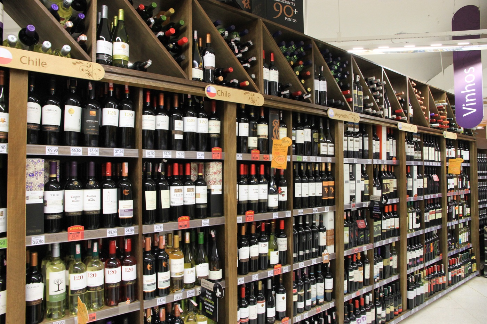

Lista de Vinhos
Home
Lista de Vinhos
Vinhos e Regiões

Cabernet Sauvignon - Bordeaux, França
Merlot - Toscana, Itália
Chardonnay - Napa Valley, EUA
Sauvignon Blanc - Marlborough, Nova Zelândia
Malbec - Mendoza, Argentina